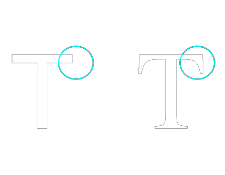

CSS
Table of content
General
CSS stands for Cascading Style Sheets and defines the style of a webpage.
Typically the css file is called style.css or styles.css.
To use a css it must be linked within the HTML head declaration with a <link> element.
The syntax is the following: <link rel="stylesheet" href="path to css">.
A CSS rule consists of a selector and a declaration block. A declaration block can contain multiple declarations that give properties a value and are seperated by a ; (semi colon).
selector {
declaration (property : value);
declaration2 (property2 : value);
}
Combinators
There are 4 combinators: descendant, direct child, adjacent sibling, sibling.
section p { /*All <p> in section are selected*/
font-size = 13px;
}
section > p { /*All <p> that are direct childs of section are selected*/
font-size = 16px;
}
section + p { /*The first <p> after the section element is selected*/
font-size = 12px;
}
section ~ p { /*All next siblings to section that are <p> are selected*/
font-size = 14px;
}
Text Formatting
To color the Text the color property is used.
The value can be:
- a color name - like "red"
- a HEX value - like "#ff0000"
- an RGB value - like "rgb(255,0,0)"
Following properties can be edited to align the text:
- direction: Specifies the text direction/writing direction
- text-align: Specifies the horizontal alignment of text
- text-align-last: Specifies how to align the last line of a text
- unicode-bidi: Used together with the direction property to set or return whether the text should be overridden to support multiple languages in the same document
- vertical-align: Sets the vertical alignment of an element
Background Formatting
- background-color: Specifies the background color of an element.
- background-image: Sets an image as the background for an element.
- background-repeat: Determines how the background image is repeated:
- repeat: The image repeats both vertically and horizontally (default).
- repeat-x: The image repeats horizontally only.
- repeat-y: The image repeats vertically only.
- no-repeat: The image is not repeated, appearing only once.
- round: Tiles the image without cutting or stretching it.
- space: Tiles the image without cutting or stretching it and spaces the tiles evenly.
- background-attachment: Defines whether the background image scrolls with the content:
- scroll: The background image scrolls with the content (default behavior).
- fixed: The background image remains fixed as the content scrolls.
- local: The background scrolls with the element's content, not the page.
- background-position: Specifies the starting position of the background image:
- x-axis y-axis: You can use keywords like top, bottom, center, left, right, or specific values (e.g., top right, center center, 10px 20px).
- x-axis: Shorthand for horizontal positioning (e.g., left, center, right).
- y-axis: Shorthand for vertical positioning (e.g., top, center, bottom).
Fonts
There are 2 font types: Sans-Serif and Serif fonts.
Serif fonts have small strokes at the edges of each letter, whereas sans-serif fonts are just clean lines without strokes. Generally sans-serif fonts are easier to read on displays.
Pseudo Classes
<a> does have following pseudo classes:
- :link: Is applied when the element wasnt clicked and not visited
- :visited: Is applied when the element was already clicked and visited
- :hover: Is applied when the element is hovered with the mouse
- :active: Is applied when the element is selected
Note that it is important to write this pseudo classes in this order to function correctly.